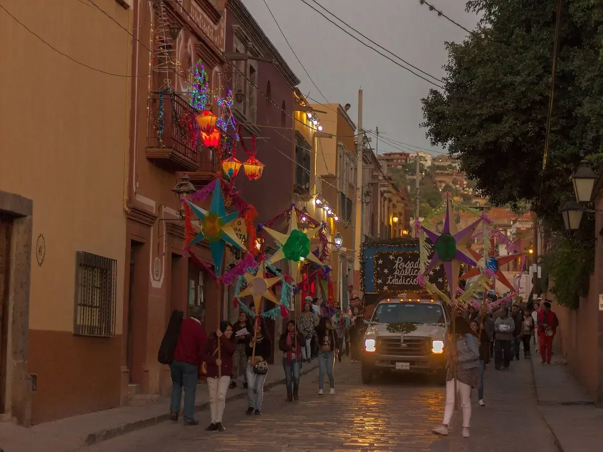
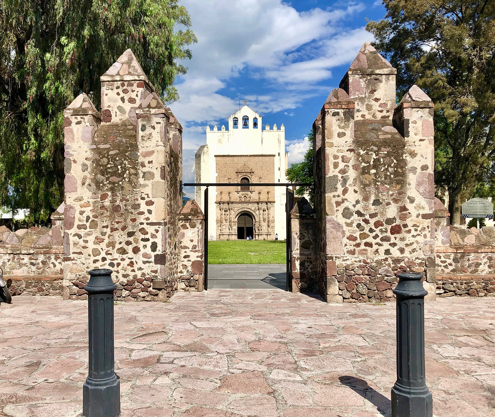
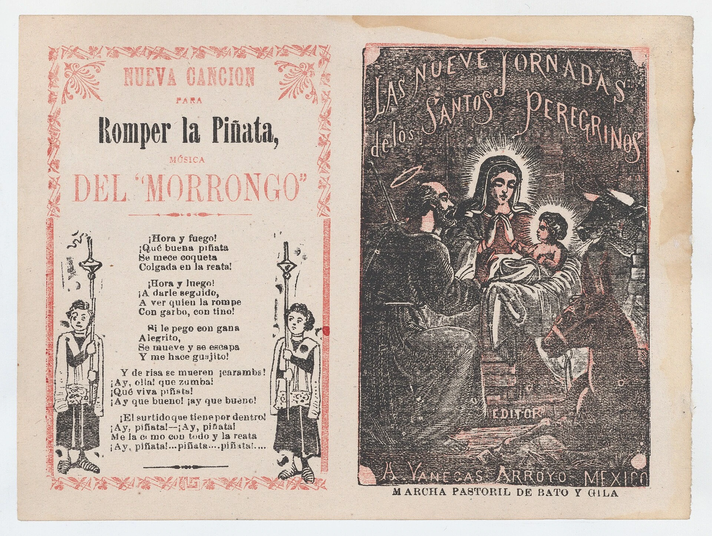
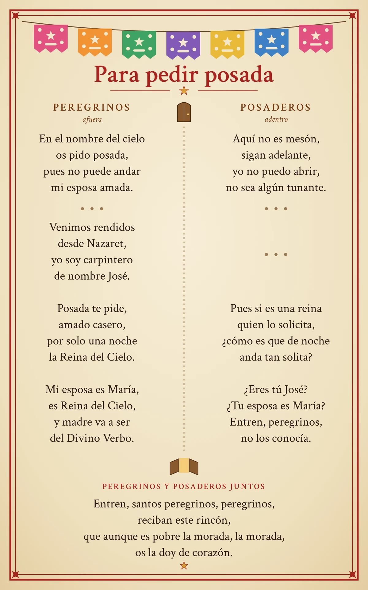

아직 펼치지 않은 카드세계의 성탄 전야 · 2라스 포사다스마리아와 요셉이 오늘 밤 우리 집 문을 두드린다면?마리아와 요셉이 우리 집 문을 똑똑 두드리면 뭐라고 할까?
1587년부터 · 해마다 12월 16~24일멕시코 · 아콜만에서 온 나라로
라스 포사다스
멕시코에서는 해마다 12월 16일부터 24일까지 아홉 밤 동안, 이웃들이 마리아와 요셉이 되어 묵을 곳을 찾아다녀요. 문밖에서 노래로 청하면 문 안에서 노래로 거절하고, 마지막에 문이 열려요. 문을 사이에 둔 노래 종이를 한 절씩 펼쳐 읽어 보세요.
마리아와 요셉이 “재워 주세요” 하고 노래하면, 집 안에서도 노래로 대답해. 노래 종이를 펼쳐서 언제 문이 열리는지 볼까?
검수 전 시안이에요(기준서 2판). 장면에는 기록에 있는 것만 옮겼고, 전해지는 이야기는 그렇다고 밝혔어요. 상상은 ‘눈 감고 상상해 보기’에만 썼어요. 노래 종이는 이 안내서가 꾸민 그림이에요.
시안 확인용카드 단계 미리 보기
1
아홉 날의 미사
멕시코시티 가까이, 테오티우아칸 유적 근처의 아콜만(Acolman)에는 1539년 무렵 짓기 시작한 아우구스티노회 수도원이 있어요. 멕시코 국립 인류학 역사 연구소(INAH)는 이곳을 포사다스가 시작된 곳으로 소개해요.
1587년, 이 수도원의 원장 디에고 데 소리아(Diego de Soria) 수사가 교황 식스토 5세에게서 허락을 받았어요. 12월 16일부터 24일까지 아홉 날 동안 ‘아기날도 미사’(아기날도는 성탄 선물이라는 뜻)를 드려도 된다는 허락이었어요.
세월이 흐르며 이 기도는 수도원 밖으로 나왔어요. 멕시코 대교구의 아길라르 신부는 포사다스가 동네와 거리, 집 마당에서 열리게 되었다고 설명해요.

위 사진은 오늘의 아콜만 수도원이에요. 돌을 쌓은 마당 문 너머로 성당 앞모습이 보여요.
아주 옛날, 이 수도원에서 성탄 전 아홉 날 동안 미사를 드렸대. 그 기도가 동네와 집으로 퍼져 나갔어.
물어보기아홉 밤을 손가락으로 세어 볼까? 16, 17, 18…
2
노래책을 찍은 집
19세기 끝 무렵, 멕시코의 인쇄업자 안토니오 바네가스 아로요(Antonio Vanegas Arroyo, 1850~1917)는 포사다스 노래책을 찍어 팔았어요. 연구자 크루티츠카야는 그가 포사다스 노래책을 처음 찍은 사람일 거라고 봐요.
얇은 노래책에는 성모 호칭 기도(성모 마리아를 여러 이름으로 부르며 비는 기도), 아홉 날의 기도, 묵을 곳을 청하고 내주는 노래, 문을 여는 노래, 아기 예수 자장가가 차례로 실렸어요. 피냐타를 깰 때 부르는 노래가 들어가기도 했어요.

위 표지 그림은 판화가 호세 과달루페 포사다(José Guadalupe Posada)가 새겼어요. 오른쪽 쪽에는 ‘거룩한 순례자들의 아홉 날’이라는 제목 아래 구유의 성가족이, 왼쪽 쪽에는 피냐타 노래가 있어요.
옛날 사람들은 이 작은 노래책을 들고 집집마다 노래했어. 피냐타 노래도 들어 있었대!
물어보기표지에서 마리아와 요셉을 찾아볼까?
3
문 앞의 노래
성경은 마리아와 요셉이 베들레헴에서 묵을 곳에 자리가 없어, 아기를 구유(가축의 먹이통)에 뉘었다고 전해요(누가복음 2장 7절).
포사다스의 한가운데는 닫힌 문 앞에서 주고받는 노래예요. 문밖의 순례자가 묵을 곳을 청하면, 문 안의 집주인이 노래로 거절해요. 몇 번을 주고받다가, 두드리는 이가 누구인지 알게 되면 문이 열려요.
아래 종이는 이 안내서가 꾸민 노래 종이예요. 노랫말은 멕시코 대교구 매체가 펴낸 노래 안내서에서 골라 옮겼고, 몇 절은 줄였어요. 아래쪽 굴대를 끌어 내리며 한 절씩 펼쳐 보세요.
종이 아래쪽 굴대를 끌어 내리거나 ‘한 줄 더 펼치기’를 눌러, 문밖과 문 안의 노래를 한 절씩 읽어 보세요.

이 안내서가 꾸민 노래 종이(옛 노래책을 옮긴 그림이 아니에요 · 몇 절은 줄였어요) · 이 안내서가 그린 노래 종이 · 노랫말은 Desde la Fe(멕시코 대교구 매체)의 노래 안내서(2023)를 바탕으로
왼쪽은 문밖의 순례자, 오른쪽은 문 안의 집주인이에요. 가운데 점선이 문이에요.
문이 열렸어요. 마지막 절은 문밖과 문 안이 함께 불러요.
문밖에서 노래로 “재워 주세요” 하면, 문 안에서 노래로 대답해. 종이를 내리면서 같이 읽어 봐!
물어보기집주인은 몇 번째 노래에서 문을 열어 줄까?
4
1840년 성탄 전야
1840년 성탄 전야, 멕시코시티. 스코틀랜드에서 태어난 패니 칼데론 데 라 바르카(Fanny Calderón de la Barca)는 멕시코에 처음 온 스페인 공사의 아내였어요. 그날 밤 한 후작 부인의 집에서 열린 포사다스에 갔고, 다음 날 편지에 그 밤을 적었어요.
밤 아홉 시쯤 예식이 시작됐어요. 여자들은 저마다 불 켠 초를 들고 둘씩 짝을 지어, 늘푸른 가지와 등불로 꾸민 온 집 안을 돌며 성모 호칭 기도를 노래했어요. 천사처럼 꾸민 어린아이들이 뒤따랐어요.
닫힌 문 앞에서, 마리아와 요셉의 목소리가 춥고 어두운 밤에 묵을 곳을 청했어요. 안에서는 노래로 거절했어요. 다시 청하며 밖에 있는 이가 ‘하늘의 여왕’이라고 하자—
“그 이름에 문이 활짝 열리고, 성가족이 노래하며 들어왔어요.”
칼데론 데 라 바르카, 「멕시코의 생활」 서른째 편지(1840년 12월 25일) · 이 안내서가 옮김
노래 종이에서 문을 연 이름도 ‘하늘의 여왕’이었어요.
옛날 편지에 이 밤이 적혀 있어. “하늘의 여왕이에요!” 하자, 문이 활짝 열렸대!
물어보기문이 활짝 열렸을 때 성가족은 무엇을 하며 들어왔을까?
눈 감고 상상해 보기
12월의 밤, 촛불을 든 사람들이 한 집 앞에 멈춰 서요. 닫힌 문 너머에서 노래가 돌아오고, 밖에서 다시 노래로 청해요. 마침내 빗장이 풀리는 소리, 문틈으로 쏟아지는 따뜻한 불빛. 모두 노래하며 안으로 들어가요.
눈을 감아 봐. 깜깜한 밤, 촛불을 들고 문 앞에 섰어. 똑똑! 노래로 “재워 주세요.” 문이 끼익 열리고 따뜻한 불빛이 쏟아져.
나의 자리
노래 속 집주인은 두드리는 이가 누구인지 알고서야 문을 열었어요. 나라면 몇 번째 노래에서 문을 열고 싶을까요?
문밖에서 “재워 주세요” 노래가 들리면, 너는 몇 번째 노래에서 문을 열어 줄래?
마음에 닿는 한 줄을 고르거나 직접 써 보세요. 한 줄을 남기면 이 자리의 도장이 찍혀요. 이 기기에만 저장돼요.
더 깊이
궁금한 칸만 펼쳐 읽어도 괜찮아요.
알고 보면
편지 속 기도가 노래책에도 1840년 칼데론 부인이 들은 성모 호칭 기도는 바네가스 아로요의 노래책에도 맨 앞에 실렸어요. 노래책은 기도와 노래의 차례를 그대로 담아, 집에서도 포사다스를 할 수 있게 했어요.
피냐타 노래의 가락 크루티츠카야는 바네가스 아로요가 찍은 「피냐타를 깨는 새 노래」가, 1901년 스페인 사르수엘라(노래와 대사가 섞인 연극) 「엔세냔사 리브레」에 나오는 탱고 ‘모롱고’ 가락에 맞춘 노래라고 적어요.
별 모양 피냐타 멕시코 대교구의 아길라르 신부는 별 모양 피냐타의 일곱 뿔을 일곱 가지 죄로, 막대를 덕으로, 눈가리개를 믿음으로, 쏟아지는 과자를 하느님의 자비로 풀이해요.
기록마다 다른 점
1586년일까, 1587년일까 카드 앞면은 1586년이라고 적었지만, INAH 보도 자료와 멕시코 대교구 신부의 설명은 모두 1587년이에요.
노래책은 언제 찍었을까 메트로폴리탄 미술관은 위 표지를 1890~1910년 무렵으로 적어요. 크루티츠카야가 살핀 판들은 1901·1909·1915·1918·1930년에 찍은 것이고, 1930년 판은 인쇄소 50주년을 기념했다고 해요.
노랫말도 책마다 달라요 노랫말은 지역과 책마다 조금씩 달라요. 바네가스 아로요의 노래책에도 묵을 곳을 청하는 노래가 두 가지로 실렸고, 그중 하나는 ‘밖’(afuera)과 ‘안’(adentro)으로 나뉘어 있어요.
직접 가 보기
확인한 날 · 2026년 11월 18일 · 바뀌기 쉬운 정보라 정기적으로 다시 확인해요
포사다스는 해마다 12월 16일부터 24일까지 아홉 밤 동안 열려요. 2026년에도 같은 날짜예요. 동네와 성당마다 시간과 장소가 달라서, 그 지역 성당이나 관광 안내로 확인하세요.
아콜만 수도원은 지금 INAH가 돌보는 박물관이에요. 테오티우아칸 유적 가까이에 있어요. 날마다 9시부터 17시 30분까지 열어요(2026년 11월 INAH 누리집 기준).
끝까지 펼쳐 읽기 금박
노래 종이를 끝까지 펼쳐 여덟 절을 다 읽으면 카드에 금박이 입혀져요.
노래 종이를 끝까지 펼쳐 여덟 절 읽기
아이와 함께 채색
아이와 함께 ‘영화처럼 보기’를 끝까지 보면 카드가 채색돼요.
아이와 함께 ‘영화처럼 보기’를 끝까지 보기
근거 보기 (9)
- INAH 보도 자료 157호(2025.4.1): 아콜만 수도원은 1539년 무렵 짓기 시작, 성 아우구스티노에게 바침, 포사다스가 시작된 곳으로 여겨짐 — 1587년 디에고 데 소리아 원장이 교황 식스토 5세의 허락으로 12월 16~24일 아기날도 미사
- 가톨릭 월드 리포트(2022, 멕시코 대교구 호세 데 헤수스 아길라르 신부): 아콜만의 첫 포사다, 아홉 번의 미사, 뒤에 동네·거리·마당으로, 피냐타 풀이
- 아나스타시아 크루티츠카야, 「포사다스의 노래: 거룩한 순례자들의 아홉 날」(Revista de Literaturas Populares XIII-2, 2013, UNAM) — 바네가스 아로요(1850~1917)가 아마 첫 노래책 인쇄업자, 노래책의 차례, 1901~1930년의 판, 밖과 안이 주고받는 노래, ‘모롱고’ 가락의 피냐타 노래
- 메트로폴리탄 미술관: 「거룩한 순례자들의 아홉 날」 표지, 구유의 성가족 — 포사다(1852~1913) 그림, 바네가스 아로요 펴냄, 1890~1910년 무렵
- Desde la Fe(멕시코 대교구 매체), 「Guía descargable para arrullar y acostar al Niño Dios」(2023) — 순례자·집주인·함께 부르는 노랫말
- 칼데론 데 라 바르카, 「멕시코의 생활」(Life in Mexico, 1843) 2권 서른째 편지 — 1840년 성탄 전야 후작 부인 집의 포사다스(아홉 시, 초, 늘푸른 가지와 등불, 성모 호칭 기도, 천사 차림 아이들, 문 앞의 노래, ‘하늘의 여왕’)
- 엔사이클로피디아닷컴(Women in World History): 프랜시스 칼데론 데 라 바르카 — 1804년 에든버러 태생, 스페인 외교관 앙헬 칼데론 데 라 바르카와 결혼, 1839년 멕시코(남편은 멕시코에 온 첫 스페인 공사), 1843년 「멕시코의 생활」
- INAH: 아콜만 수도원(박물관) — 주소, 날마다 9:00~17:30
- 위키미디어 공용: 아콜만 수도원 사진 정보(2019)
그림·사진·소리 출처
‘처음 만나는 기독교 문화’의 깊은 카드예요. 카드 단계와 남긴 글은 이 기기에만 저장돼요.